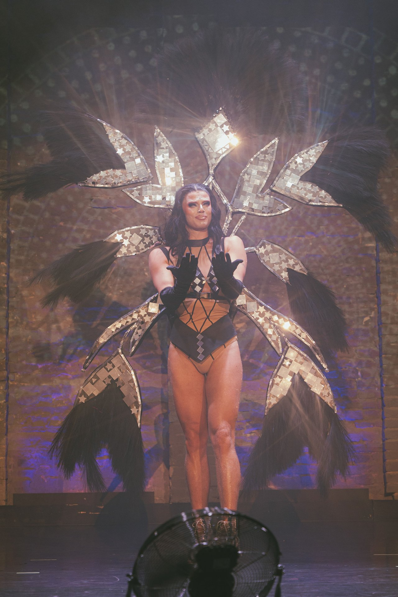
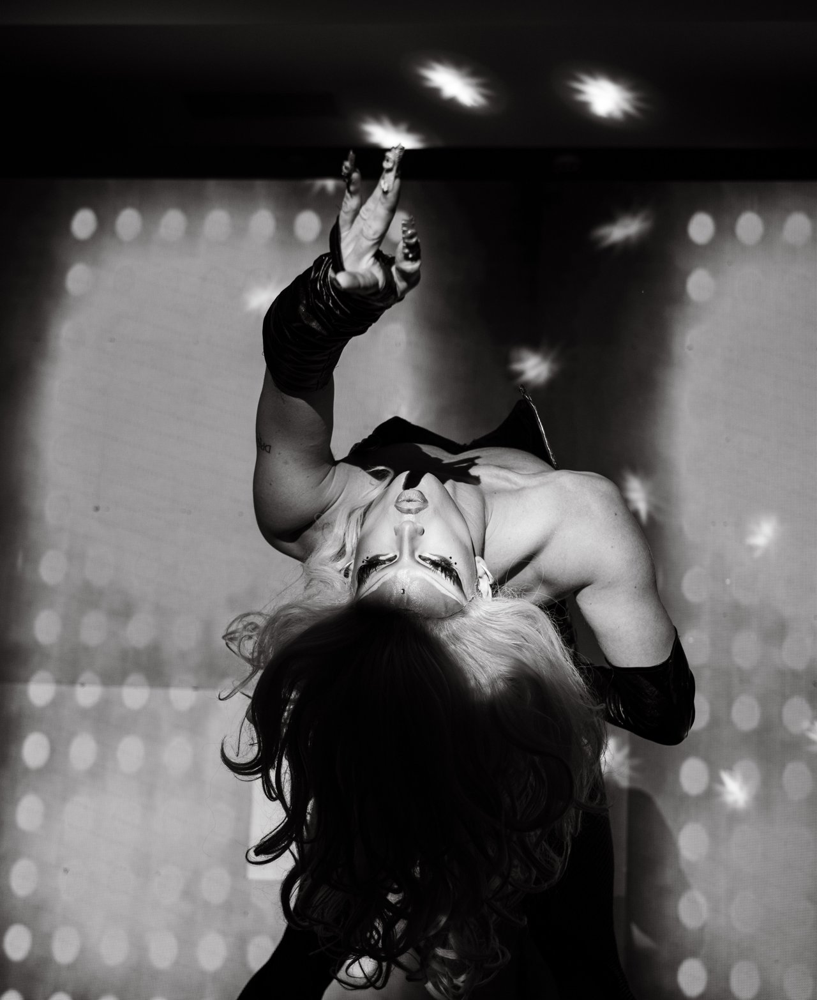
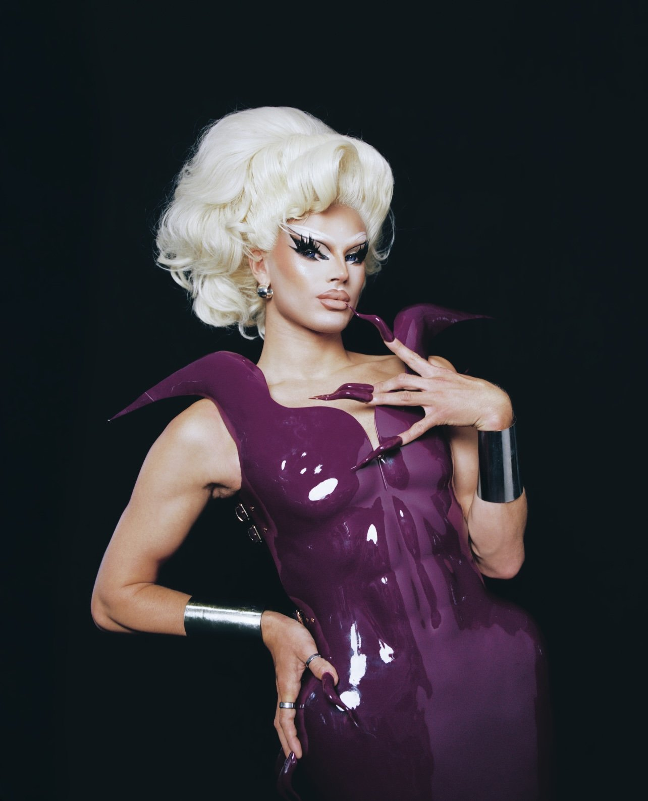

Performances und Tanz
Show- und Tanznummern für Bühnen, Galas, Partys und Events, glamourös, sexy und mit großer Präsenz.
Face and Bombshell
Symba ist Drag Queen, Performerin und Tänzerin. Ihr Drag ist sehr polished und von amerikanischem Drag inspiriert. Auf der Bühne ist sie eine Erscheinung: glamourös, sexy, selbstbewusst und immer auf Perfektion ausgerichtet.
Wenn Symba die Bühne betritt, zieht sie alle Blicke auf sich: Ihre Nummern schwanken zwischen High Energy und großem Drama und leben von Haltung, Bewegung und Ausdruck. Vieles von dem, was man dabei sieht, hat sie selbst gemacht. Ihre Outfits und Perücken entstehen oft in eigener Handarbeit, und bis zum Auftritt ist jedes Detail durchdacht, vom Make-up bis zur Körperhaltung.

Show- und Tanznummern für Bühnen, Galas, Partys und Events, glamourös, sexy und mit großer Präsenz.
Selbst gemachte Kostüme und Perücken, Perücken-Styling und Workshops rund um den Drag-Look.
Kampagnen, Fotoshootings und Social-Media-Content für Marken.
Walking Acts und Showmomente, die den Blick auf sich ziehen.




Anfragen mit Datum, Ort und Art der Veranstaltung gehen direkt an booking@ducttape.berlin.
Symba buchenMehr von DUCT TAPE